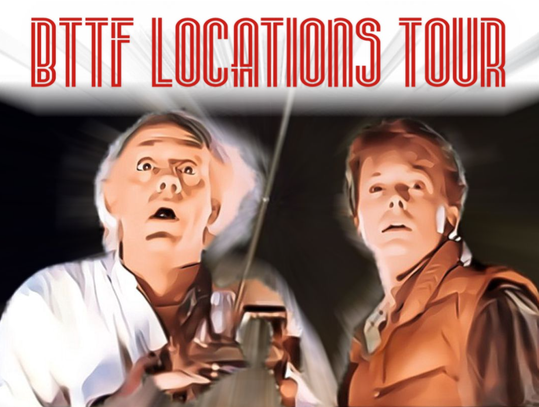
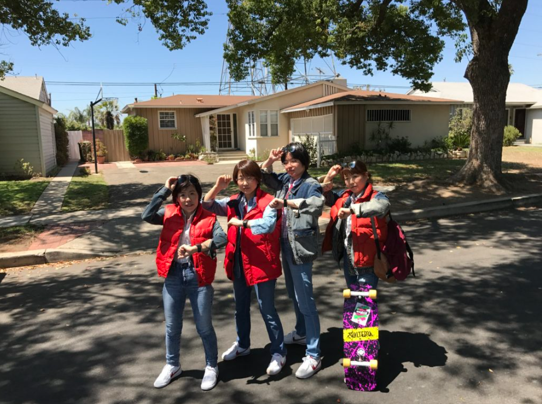
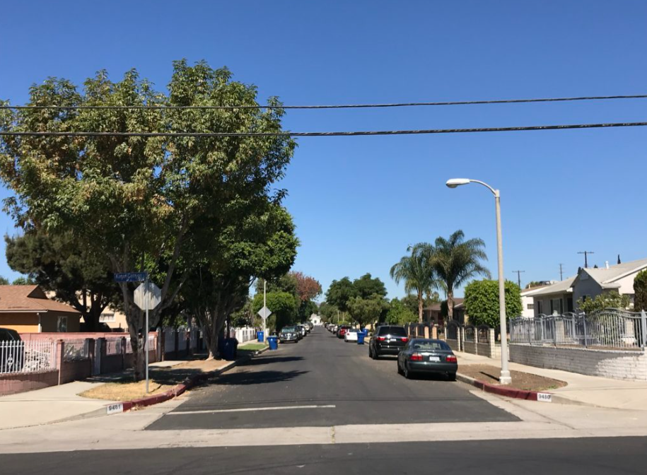
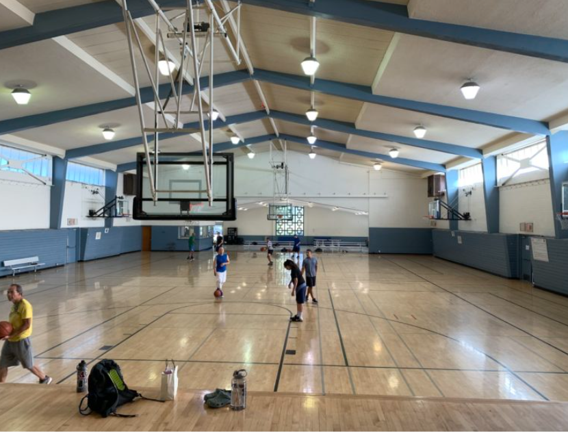
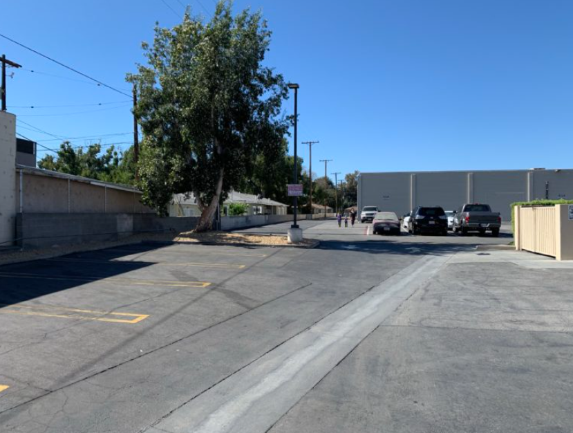
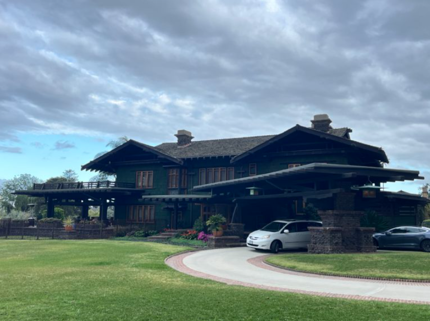
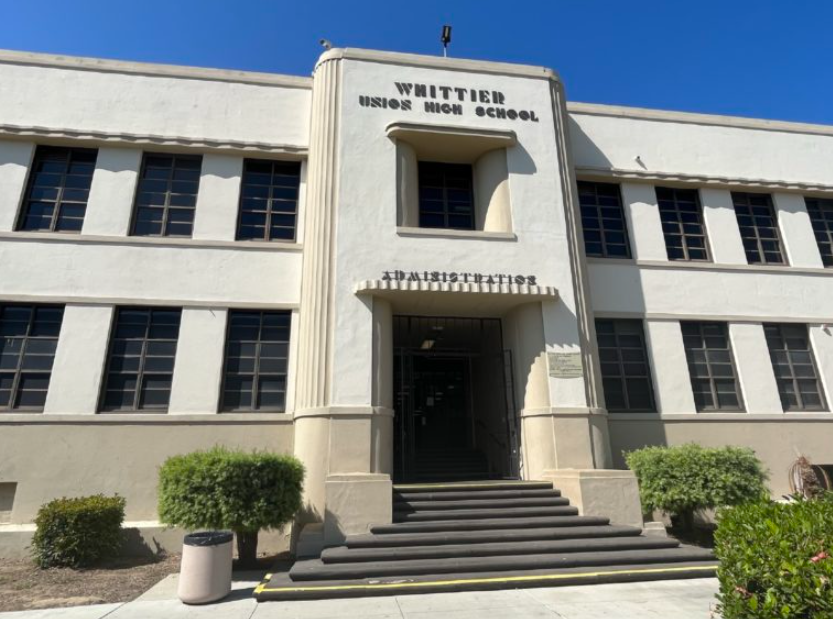
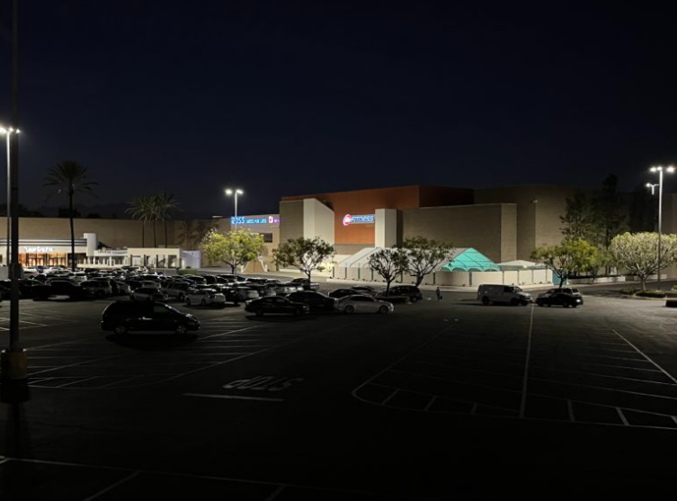
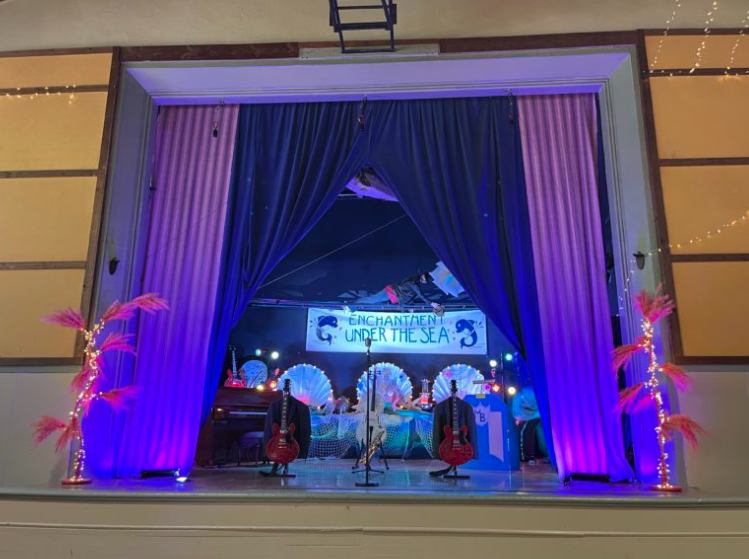

映画『バックトゥザフューチャー』ロケ地巡りツアー

1985年に世界中で大ヒットしたロバート・ゼメキス監督の映画『バック・トゥー・ザ・フューチャー』。ロケの多くはユニバーサルスタジオ内のセットで行われたが、ロサンゼルスの街中でもたくさんのシーンが撮られている。残念ながら数年前にあの時計台などが火事で焼失してい、おまけにバック・トゥー・ザ・フューチャーのライドまでなくなってしまって、BTTFファンには真に悲しい限りだ。
映画では1985年から1955年にタイムスリップしたが、このツアーでは1985年の当時にタイムスリップしたかのように、BTTFのロケ地の数々をご紹介する。
来年BTTF1の40周年記念という事で、スペシャルツアーも企画中ですので、乞うご期待！
ロケ地
◀
▶
1985年のマクフライ家

1985年のリヨン団地のゲートがあった場所

バトル・オブ・ザ・バンドのオーディション会場

オープニングでマーティがスケボで出てきたシーン

ドクの家の内装のシーンが撮られた家

ヒルバレー高校

ツインパインモール

魅惑の深海パーティが撮影された所

他のロケ地スポット
タイムスケジュール(例)
あくまでサンプルですので、お客様のご要望に合わせて柔軟に対応いたします。
他のロケ地ツアーと併せてご案内することも可能ですので、何なりとお申し付けください。
ツアー時間は5時間～8時間になります
| 時間 | 活動 | 場所 | 詳細 |
|---|---|---|---|
| 10:00 | ホテルで待ち合わせ | ご宿泊のホテル | ご宿泊のホテルまでお向かいに上がります |
| 11:00 | 『バックトゥザフューチャー』のロケ地ツアー | ロサンゼルス | ワイスピのみならずLAの見所をご案内！！ |
| 12:00 | ランチ | 現地のレストラン | お勧めのレストランをご案内します |
| 13:30 | 『バックトゥザフューチャー』のロケ地ツアー | ロサンゼルス | 午後も張り切って行きましょう💪 |
| 18:00 | 夕食 | 現地のレストラン | お勧めのレストランをご案内します |
| 19:00 | ホテルで解散 | 宿泊ホテル | ご宿泊のホテルで解散になります |